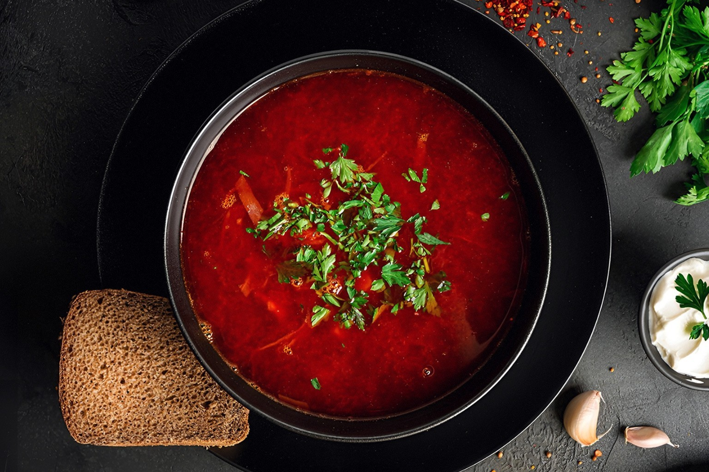
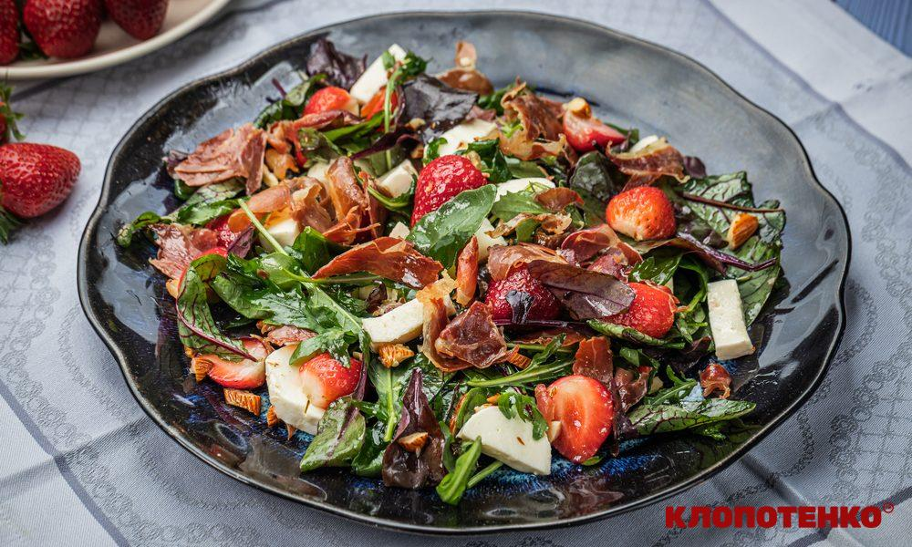
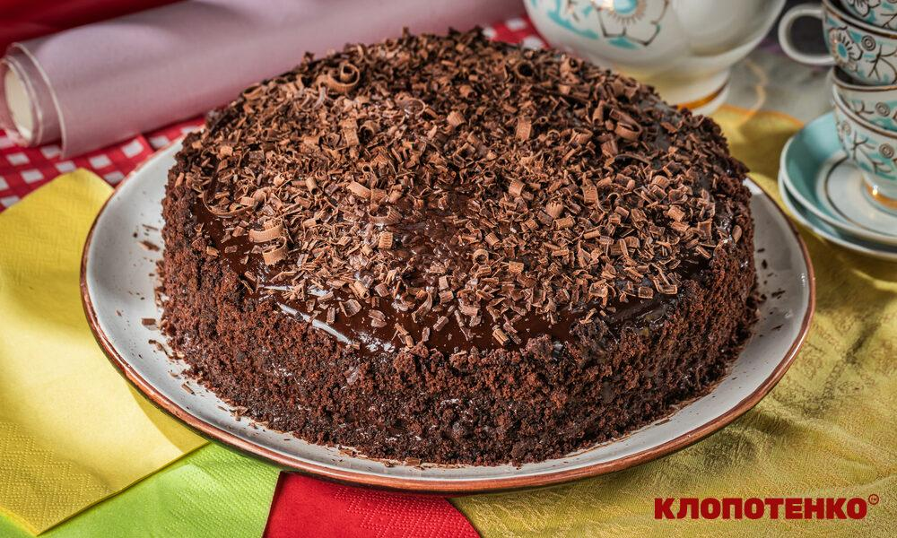

Млинці на молоці
Необхідні інгредієнти:
- 2 яйця
- 2 ст.л. цукру
- 1/3 ч.л. солі
- 2 ст.л. соняшникової олії (+2 ст.л. для смаження млинців)
- 340 мл молока
- 150 г борошна
- 50 г вершкового масла
Покроковий рецепт:
- В миску, в якій будете замішувати тісто вбийте 2 яйця, додайте 2 ст. л цукру, 1/3 ч. л. солі та влийте 2 ст. л соняшникової олії. перемішуйте віничком до об’єднання компонентів.
- Влийте 340 мл молока та знову перемішайте віничком. Цукор і сіль мають повністю розчинитися.
- Порціями додавайте 130 г борошна та продовжуйте добре вимішувати віничком. У вас має вийти рідке тісто. Залиште його відпочивати на 10 хвилин.
- Змастіть розігріту пательню соняшниковою олією за допомогою кулінарного пензлика.
- Ополоником виливайте тісто на середину сковорідку та розподіляйте її по всьому дну, нахиляючи пательню з боку в бік.
- Як краї млинця стануть коричневими, перевертайте його на інший бік. Так само смажте всі млинці та складайте їх один на один. За бажанням кожен змащуйте вершковим маслом.
Пісний борщ з бататом
Необхідні інгредієнти:
- 150 г батату
- 50 г моркви
- 80 г буряку
- 50 г цибулі
- 60 г білоголової капусти
- 15 г томатної пасти
- 10 г олії
- дрібка сушеного часнику
- 1 лавровий листок
- 2-3 горошки духмяного перцю
- ½ ч. л. солі (3 г)
- 800 мл води
- 40 г сметани (для подачі)
Покроковий рецепт:
- Всі коренеплоди помийте та почистьте від шкірки. 80 г буряку наріжте соломкою або натріть на крупну терку та пасеруйте на розігрітій пательні з 5 г олії 5-7 хв.
- Додайте на пательню до буряку 15 г томатної пасти, трішки питної кип'яченої води (приблизно 50 мл), перемішайте та тушкуйте до готовності 15-20 хв.
- 50 г очищеної моркви також наріжте тонкою соломкою або натріть на крупну терку, а 50 г цибулі дрібно нашаткуйте. Викладіть овочі на розігріту з 5 г олії пательню (окремо від буряку) та смажте 7-10 хв або до золотавого кольору овочів.
- Наріжте кубиками очищений батат, нашаткуйте 60 г білоголової капусти.
- У каструлю налийте 800 мл води, доведіть її до кипіння та додайте сюди 150 г нарізаного батату. Ще раз доведіть воду до кипіння та додайте нашатковану капусту. Варіть овочі 10-15 хв на середньому вогні.
- Додайте в каструлю тушкований буряк та обсмажену цибулю з морквою і варіть борщ ще 10-15 хв.
- За 5-7 хв до завершення приготування страви додайте до борщу лавровий лист, 2-3 горошки духмяного перцю, ½ ч. л. солі, дрібку сушеного часнику. Готовий борщ подавайте зі сметаною.

Теплий салат з полуницею
Необхідні інгредієнти:
- 200 г полуниці
- 100 г моцарели
- 70 г салатного міксу
- 70 г прошуто
- 30 г мигдалю
- 1 ст. л. оливкової олії
- ½ ч. л. меду
- 2 ч. л.. лимонного соку
Покроковий рецепт:
- Викладіть на розігріту суху сковорідку 70 г прошуто і підсушіть його до хрусткого стану, щоб м'ясо нагадувало чипси. Потім прошуто на невеликі шматочки.
- Так само на сухій сковороді обсмажте 30 г мигдалю, аби зробити його хрустким та краще розкрити горіховий аромат. Наріжте мигдаль шматочками. Окремо помийте і просушіть 200 г полуниці, ягоди розріжте навпіл. Наріжте кубиками 100 г моцарели.
- В окремій ємності змішайте до однорідності 1 ст. л. оливкової олії, ½ ч. л. меду, 2 ч. л. лимонного соку. Кількість меду регулюйте собі до смаку, залежно від солодкості ягід.
- У мисці змішайте нарізану полуницю, моцарелу, 70 г салатного міксу та обсмажені горіхи. Залийте салат заправкою, посоліть до смаку, перемішайте. Зверху посипте чипсами прошуто та одразу подавайте.

Шоколадний торт
Необхідні інгредієнти:
Для торта:
- 240 г борошна
- 10 г розпушувача
- 3 г солі
- 55 г какао
- 280 мл молока
- 60 г олії
- 3 яйця
Для крему:
- 1 яйце
- 150 г цукру
- 40 г какао
- 50 г кукурудзяного крохмалю
- 500 мл молока
- 180 г масла
Для глазурі:
- 170 г темного шоколаду
- 30 г масла
- 30 мл молока
Для декору:
- 20–30 г темного шоколаду
Покроковий рецепт:
- Змішайте у глибокій мисці 240 г борошна, 10 г розпушувача, 3 г солі та 55 г какао.
- Додайте до сухих інгредієнтів 280 мл молока, 60 г олії та 3 яйця. Замісіть однорідне тісто без грудочок. Для цього можна використати блендер або вінчик.
- Вилийте тісто у металеву розʼємну форму, застеливши дно пергаментом. Діаметр форми — 22 см. Випікайте пиріг протягом 1 години у заздалегідь розігрітій духовці за температури 180 градусів.
- Поки печеться бісквіт, приготуйте крем. Для цього змішайте у сотейнику 1 яйце, 150 г цукру, 40 г какао, 50 г кукурудзяного крохмалю. Поставте сотейник на вогонь, ретельно перемішайте інгредієнти та поступово влийте тонкою цівкою до них 500 мл молока, постійно помішуючи.
- Варіть крем, поки він не стане однорідним і шовковистим та не загусне. Зніміть з вогню та охолодіть до кімнатної температури. Далі збийте міксером 180 г масла до пишності та поступово введіть у масло заварний крем, продовжуючи збивати міксером.
- Готовий та охолоджений бісквіт розріжте на два однакові коржі. З верхнього коржа зріжте верхівку та залиште для декору, зробивши з неї крихту. Для цього можна використати ніж або кондитерський шпатель.
- Верхній корж переверніть догори дриґом та викладіть на тарілку, на якій будете формувати торт. Щедро змастіть корж шоколадним кремом. Далі викладіть другий корж, змастіть кремом борти торта.
- Відправте торт у холодильник на 30 хвилин для стабілізації. Далі зробіть шоколадну глазур. Для цього розтопіть на водяній бані 170 г темного шоколаду, 30 г масла та 30 мл молока.
- Дістаньте торт із холодильника. Полийте глазурʼю верхівку торта та рівномірно розподіліть її по всій поверхні. Крихтою від бісквіта прикрасьте борти торта, попередньо змащені кремом. Щоб це було легше робити, використовуйте кондитерський шпатель та легкими рухами ніби притискайте крихту до крему.
- Відправте торт у холодильник ще на 15 хвилин. Після цього прикрасьте верхівку 20–30 г натертого на великій тертці темного шоколаду. Дайте десерту ще бодай 1–2 години на стабілізацію у холодильнику. Якщо маєте більше часу, залиште торт на 5–6 годин або на всю ніч. Смачного!
